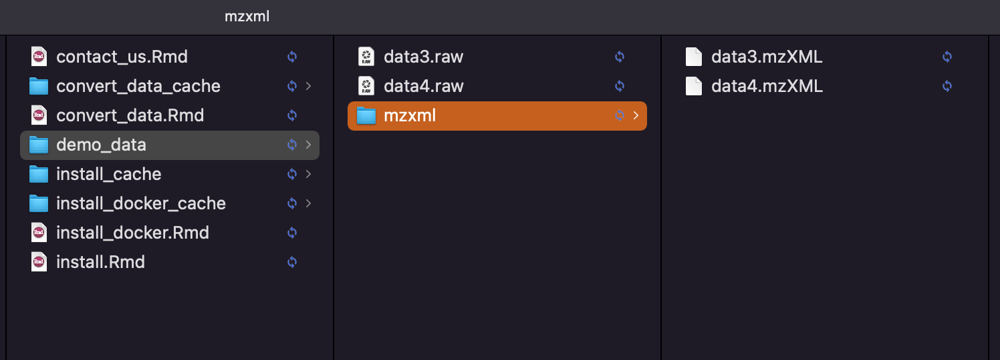

vignettes/convert_data.Rmd
convert_data.Rmdpwiz docker
Please run docker first.
We need the docker image: https://hub.docker.com/r/chambm/pwiz-skyline-i-agree-to-the-vendor-licenses. So first we need use the docker_pull_pwiz() to pull this image.
If you want to pull the latest version, set force = TRUE
docker_pull_pwiz(force = TRUE)The we need to set parameters for converter.
parameter =
massconverter::create_msconvert_parameter(
output_format = "mzXML",
binary_encoding_precision = "32",
zlib = TRUE,
write_index = TRUE,
peak_picking_algorithm = "cwt",
vendor_mslevels = c(1, NA),
cwt_mslevels = c(1, NA),
cwt_min_snr = 0.1,
cwt_min_peak_spacing = 0.1,
subset_polarity = "positive",
subset_scan_number = c(NA, NA),
subset_scan_time = c(60, 300),
subset_mslevels = c(1, 2),
zero_samples_mode = "removeExtra",
zero_samples_mslevels = c(1, NA),
zero_samples_add_missing_flanking_zero_count = 5
)
parameter
#> --------------------
#> pacakge_name: massconverter
#> function_name: create_msconvert_parameter
#> time: 2022-01-13 10:48:13
#> parameters:
#> output_format : mzXML
#> binary_encoding_precision : 32
#> zlib : TRUE
#> write_index : TRUE
#> peak_picking_algorithm : cwt
#> vendor_mslevels : c(1, NA)
#> cwt_mslevels : c(1, NA)
#> cwt_min_snr : 0.1
#> cwt_min_peak_spacing : 0.1
#> subset_polarity : positive
#> subset_scan_number : c(NA, NA)
#> subset_scan_time : c(60, 300)
#> subset_mslevels : c(1, 2)
#> zero_samples_mode : removeExtra
#> zero_samples_mslevels : c(1, NA)
#> zero_samples_add_missing_flanking_zero_count : 5Just put the raw data into one folder, and then begin to convert data.
Here we use the demo data, please download them here. And then put them in one folder named as demo_data/raw_data.
convert_raw_data(input_path = "demo_data/raw_data",
output_path = "demo_data/mzxml",
msconvert_parameter = parameter,
docker_parameters = c(),
process_all = FALSE)Then the converted data will be in the demo_data/mzxml

If you want to run it in bash, you can also use the get_run_code() to get the code that can run in bash.
get_run_code(
input_path = "demo_data/raw_data",
output_path = "demo_data/mzxml",
msconvert_parameter = parameter,
docker_parameters = c(),
process_all = FALSE
)
#> [1] "docker run --rm -e WINEDEBUG=-all -v /Users/xiaotaoshen/tidymass/massconverter/vignettes/demo_data/raw_data:/data -v /Users/xiaotaoshen/tidymass/massconverter/vignettes/demo_data/mzxml:/outpath chambm/pwiz-skyline-i-agree-to-the-vendor-licenses wine msconvert /data/sample3.raw --ignoreUnknownInstrumentError --mzXML --32 --zlib --filter \"peakPicking cwt snr=0.1 peakSpace=0.1 msLevel=1-\" --filter \"polarity positive\" --filter \"scanTime [60,300]\" --filter \"msLevel 1-2\" --filter \"zeroSamples removeExtra 1-\" -o /outpath/"
sessionInfo()
#> R Under development (unstable) (2022-01-11 r81473)
#> Platform: x86_64-apple-darwin17.0 (64-bit)
#> Running under: macOS Big Sur/Monterey 10.16
#>
#> Matrix products: default
#> BLAS: /Library/Frameworks/R.framework/Versions/4.2/Resources/lib/libRblas.0.dylib
#> LAPACK: /Library/Frameworks/R.framework/Versions/4.2/Resources/lib/libRlapack.dylib
#>
#> locale:
#> [1] en_US.UTF-8/en_US.UTF-8/en_US.UTF-8/C/en_US.UTF-8/en_US.UTF-8
#>
#> attached base packages:
#> [1] stats graphics grDevices utils datasets methods base
#>
#> other attached packages:
#> [1] massconverter_0.99.1
#>
#> loaded via a namespace (and not attached):
#> [1] rstudioapi_0.13 knitr_1.37 magrittr_2.0.1 R6_2.5.1
#> [5] ragg_1.2.1 rlang_0.4.12 fastmap_1.1.0 stringr_1.4.0
#> [9] tools_4.2.0 stevedore_0.9.4 xfun_0.29 jquerylib_0.1.4
#> [13] crosstalk_1.2.0 htmltools_0.5.2 systemfonts_1.0.3 leaflet_2.0.4.1
#> [17] yaml_2.2.1 digest_0.6.29 rprojroot_2.0.2 pkgdown_2.0.1
#> [21] crayon_1.4.2 textshaping_0.3.6 purrr_0.3.4 codetools_0.2-18
#> [25] htmlwidgets_1.5.4 sass_0.4.0 fs_1.5.2 curl_4.3.2
#> [29] memoise_2.0.1 cachem_1.0.6 evaluate_0.14 rmarkdown_2.11
#> [33] stringi_1.7.6 compiler_4.2.0 bslib_0.3.1 desc_1.4.0
#> [37] jsonlite_1.7.2